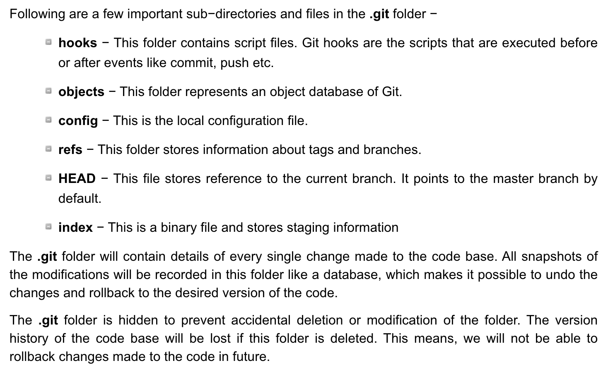

1 Intro to Git
1.1 Background info
- Git was written to allow developers work on the source code of the Linux kernel (text files)
One kernel release they got in a terrible mess
This provoked Linus Torvalds into action
For an excellent insight into his thinking watch this talk he gave at Google here
(Especially if used at the command line) Git can be intimidating to use and we can get Git errors (which like LaTeX and R errors can be quite cryptic)
- A Git repository is a folder/directory on your computer which has been Git initialised
Using either the command line
git init mynewfolderOr GitHub Desktop
Repos on GitHub are already Git initialised
- When you clone them down to your computer they work in GitHub Desktop
- Git is commonly referred to as version control software
- Git is better described as a content addressable filesystem which translates to Git tracks the contents of the files in your repo
Git creates a little database of the contents of your files - snapshots (commits) are taken when you tell it to
Git looks for changes in your files when you save them, so when you have unsaved changes in a file/s Git shows no changes until you save
Git takes snapshots of your files - when you tell it to - commits - I saved my file from above, enter a commit message and click “Commit to master”
Commits are identified by the 40-character checksum SHA-1 hash of the contents of your files at that time

Git knows the state of your files at every commit
- You can easily restore your files to a previous state
For Git the state of your files only changes when their contents change
- If you reopen a file, make no changes, then close it, Git will show no changes in your repo
- If you add an empty folder/directory to your repo Git will show no changes in your repo
- This differs to OneDrive/SharePoint/Google Drive which are file synchronisation systems
I recommend not to place your Git repos in a location that is sync’d by either OneDrive or Google Drive
1.2 The .git folder
When you initialise a directory the
.gitfolder is createdThis contains all of the files Git uses to track the contents of your files
Here is the
.gitfolder of a repo on my computer (I have selected to View hidden files in Windows Explorer)Confusingly GitHub hides the
.gitfolder from viewHere are its contents - don’t edit these manually
Explanation of these is (from here)

1.3 Common Git commands
I recommend you use GitHub Desktop instead of these commands
These commands are what GitHub Desktop is using behind the scenes
Git is the name of the program,
gitis the name of the executable available at your command linegit init git add <filename> git status git commit -m "Your commit message" git commit --amend -m "Your amended commit message" git push git pull git clone git branch git checkout git merge git fetch